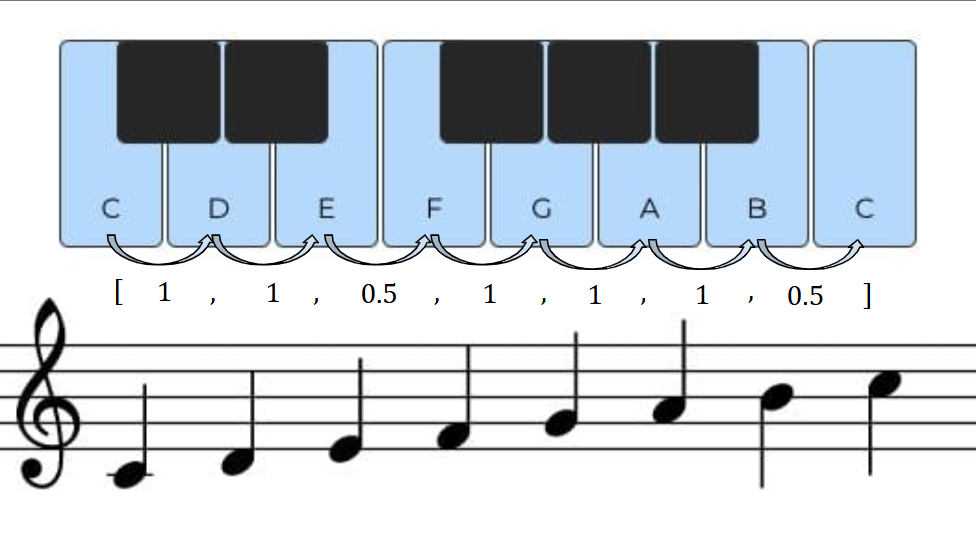
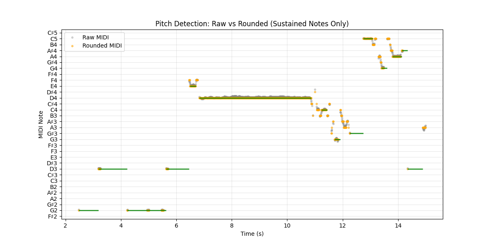

PROJECT GOAL
This project explores automatic raga identification from audio recordings of Carnatic music. Rather than treating the problem purely as a machine learning task, the goal is to capture the musical structure that defines each raga.
Audio recordings are processed using Python and Librosa to estimate pitch over time. The resulting pitch contour is quantized into a discrete sequence of notes.
Each raga is represented using a custom signature model that encodes characteristic note patterns. Extracted note sequences are compared against these signatures using tolerance-based matching, producing candidate ragas ranked by similarity.
The framework is intentionally transparent and interpretable, allowing musical reasoning to remain visible within the algorithm rather than relying on a purely black-box model.

Custom signature for raga that corresponds to western major scale (Sankarabharanam)
MUSICAL COMPLEXITY

Carnatic music presents several challenges for automatic classification because the musical expression is highly fluid and ornamented.
- Gamaka (note slides): continuous pitch motion makes discrete note detection noisy.
- Tonic (Sa) detection: small errors in tonic estimation shift the entire note mapping.
- Ornament-heavy phrases: short embellishments can confuse sequence matching.
Despite these challenges, the project introduces a structured and interpretable method
for representing raga identity. Instead of relying purely on statistical classification,
the algorithm encodes musical rules directly into the matching framework.
This approach establishes a structured foundation for representing raga identity that can later incorporate machine learning methods.
Project is ongoing and actively being refined